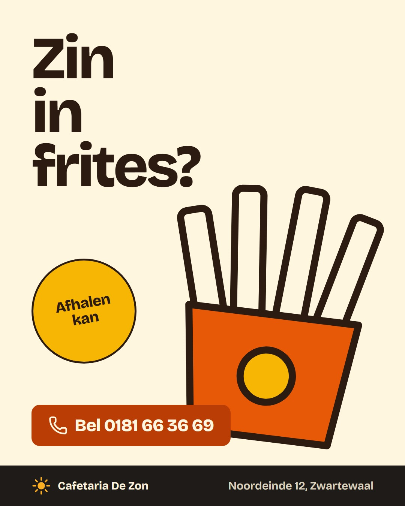
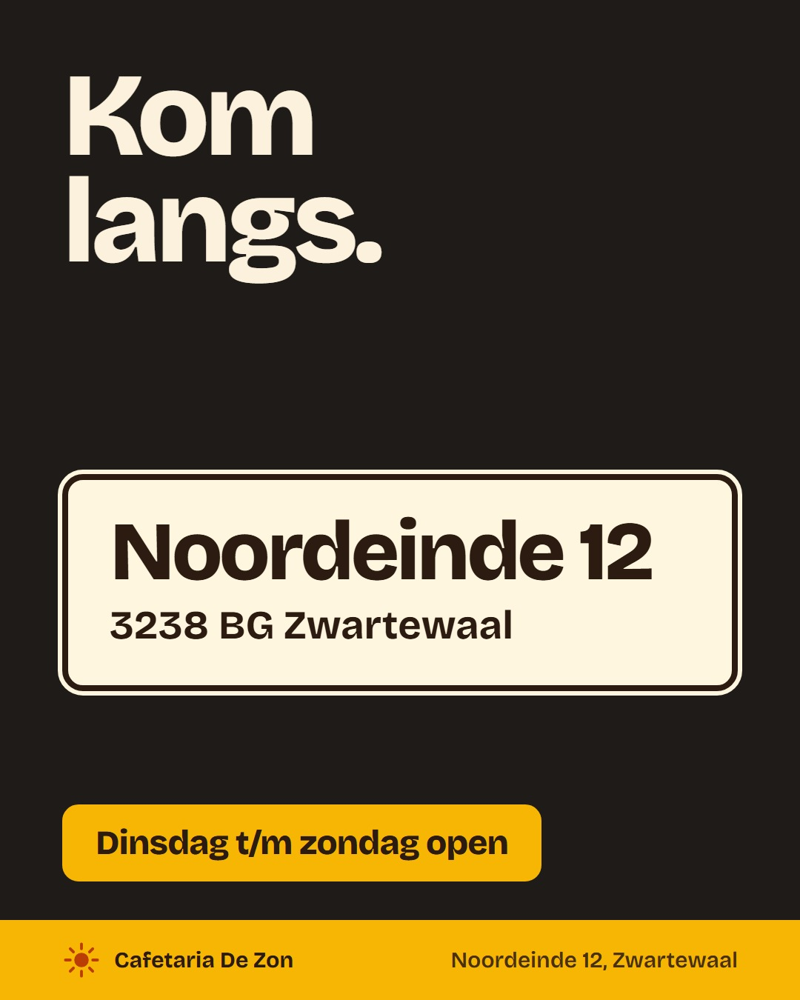

Voorbeelden




Cafetaria De Zon, Zwartewaal. Dit document hoort bij de goedgekeurde website en vertaalt de huisstijl naar Instagram en Facebook.
De Zon is warm, gezellig en een beetje speels. We praten als een buur: kort, vriendelijk, met een knipoog. We beloven niets wat niet is bevestigd.
Gebruik per afbeelding één dominante kleur (zonnegeel, crème, brandoranje of nacht). Tekst altijd inktbruin op geel of crème, crème op oranje, nachttekst op nacht. Contrastwaarden zijn gemeten met de WCAG-formule.
Bricolage Grotesque
| Rol | Gebruik | Gewicht en maat (feed 1080 breed) |
|---|---|---|
| Kop | Eén tot vier woorden, korte zinnen | 800, 100 tot 160 px, regelafstand 0,9, letterafstand -4,5% |
| Lead | Eén ondersteunende zin | 600, 42 tot 48 px |
| Chip | CTA (bel, adres, reageer) | 800, 46 px, rand 5 px inkt |
| Voetbalk | Naam en adres | 700, 30 px |
Lettertype: SIL Open Font License 1.1. Verbind de woorden "De Zon" in een kop met een vaste spatie zodat de naam niet breekt.
Eigen tekeningen met dikke inktlijn (3 px op 120 px) en vlakke kleuren. Geen schaduwen, geen verlopen, geen A-merken. Nieuwe illustraties alleen voor producten die echt bestaan.
Vlakke kleurvelden met een donkere voetbalk (logo, "Cafetaria De Zon", adres). Stickers zijn ronde cirkels met 5 px inktrand, 10 graden gekanteld. De stippelboog verwijst naar de zonnewijzer op de website.
Lucide (ISC-licentie), lijndikte 2, afgeronde uiteinden: telefoon, route, tas, pas, reactie, mensen, klok.
| Plaatsing | Formaat | Regel |
|---|---|---|
| Instagram en Facebook feed | 1080 × 1350 px (4:5) | Voetbalk onderaan; tekst niet dichter dan 84 px bij de rand |
| Carrousel | 1080 × 1350 px | Teller bovenin, swipe-aanwijzing linksonder, laatste slide met CTA |
| Stories en Reels | 1080 × 1920 px (9:16) | Houd de bovenste 250 px en onderste 340 px vrij van belangrijke tekst |
| Reel-covers | 1080 × 1920 px | Titel binnen de middelste 1080 × 1350 px, zodat de uitsnede in het profielraster werkt |
| Profielfoto | 1080 × 1080 px | Cirkelvormig bijgesneden: zon blijft midden |
| Facebook-omslag | 1640 × 624 px | Naam links, zon rechts |
Er zijn nog geen eigen foto's. Zodra die er zijn:
Bij een foto in een post gebruik je het sjabloon templates/sjablonen/sjabloon-foto-feed.


Elk ontwerp is een HTML-bestand in templates/html. Pas de tekst aan in een editor, draai node tools/render.mjs en nieuwe PNG- en JPG-bestanden verschijnen in de mappen en in exports. Gebruik de sjablonen in templates/sjablonen voor acties, foto's en vragen.